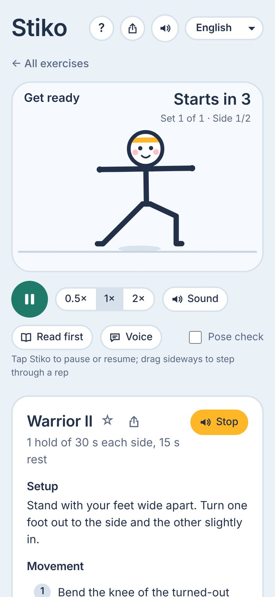
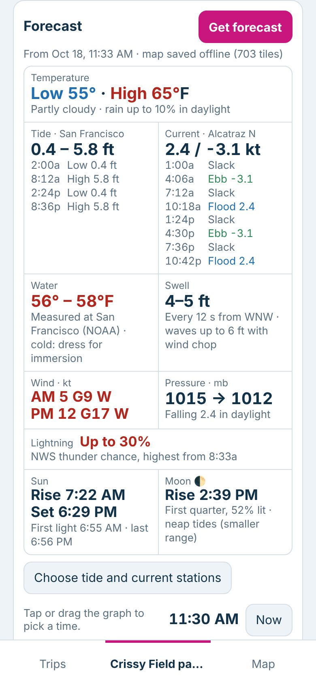
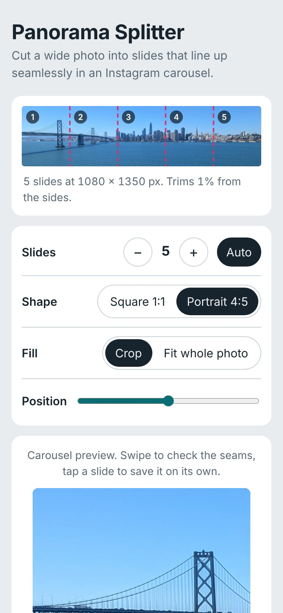

Small web apps
Three things I built for myself and a few friends. Each runs in the browser, installs to a phone's home screen and works offline. No accounts, no backend of mine, no analytics: your data stays on your device.
No claims. These are personal experiments. I don't claim they are useful, correct or fit for any purpose, and they come with no support or guarantee they'll keep working.
Use them at your own risk. Outback is not for navigation or safety decisions, and Stiko is not medical advice.
Stiko
Balanced home workouts, demonstrated by Stiko, an animated stick figure.
Does
- 121 exercises: strength, mobility, yoga, tai chi, boxing, sport prep
- Build, edit and play sessions with timers, rep counts and spoken cues
- Ready-made starter sessions
- Share a session as a link; export and import backups
- English, Bosnian, Croatian, Serbian, German, Spanish, French
Doesn't
- Give medical or physiotherapy advice
- Track progress, history or streaks
- Sync between devices (sessions live on one phone)
- Use AI or a server at run time

Outback
Plan a paddle, hike or bike ride while online, then take it offline: route, forecast, maps and tracks on the phone.
Does
- Draw a route with waypoints, stops and time estimates
- Day forecast: tides, currents, wind, swell, water temperature, sun and moon
- Saves maps (chart, street, topo, satellite) for offline use
- Overlay park PDF maps, with auto-align to the shoreline
- Live location, AIS ships, a printable 1-page trip sheet, GPX in and out
Doesn't
- Replace charts, a compass or official forecasts: not for navigation
- Record your track (import GPX from your watch instead)
- Work well outside the US: tides and charts come from NOAA, extras are SF Bay Area
- Sync between devices (use backup files)


Panorama Splitter
Cuts a wide photo into slides that line up seamlessly in an Instagram carousel.
Does
- 2–20 slides, picked automatically from the photo's shape
- Square 1:1 or portrait 4:5 at 1080 px
- Crop with a position slider, or fit the whole photo with bars
- Swipeable preview to check the seams
- Share sheet on phones, ZIP download on desktop
Doesn't
- Upload your photos anywhere
- Post to Instagram for you
- Edit photos: no filters, colour or straightening
- Stitch several photos into a panorama
